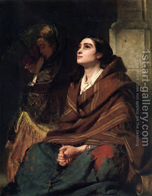

Brachot 10 - Prayer of the Refined
One must say the Shema prayer in the morning, "when people rise." When is that? When there is enough light to distinguish between the blue and the white wool (which is used in one's tzitzit ). Some say, he needs to distinguish between a wolf and a dog, and some - to recognize his friend from four steps away. When does the time to say the Shema end? Rabbi Eliezer says, at sunrise, since most people are up by then, but Rabbi Yehoshua says, "Three hours into the day, since kings do sleep that late."
People of refined character ("Vatikin") would always say the Shema just before sunrise, so that they could then start their Amidah (prayer said while standing, or Eighteen Blessings) with the sunrise. "Vatikin" can also be translated as "devoted ones," or "sharp, analytical individuals." In that way, they could say the Shema at the right time, the Amidah at the ideal time, and moreover join the past redemption (Exodus, mentioned in the Shema) to the future redemption, mentioned in the Amida. Anyone who does this can expect that no harm will befall him that day.
What if did not say the Shema at the best time, before sunrise? He can still say it until three hours into the day, says Rabbi Yehoshua, since it is the way of princes to wake up that late.
Certain people in the neighborhoud of Rabbi Meir caused him considerable distress, and he wanted to pray that they should die. His wife Beruriah stopped him: "Does it say ' The sinners will be no more '? - No! ' The sins should be no more .' Pray that they should improve their ways!" He did, and they improved.
Art: John Phillip - Prayer